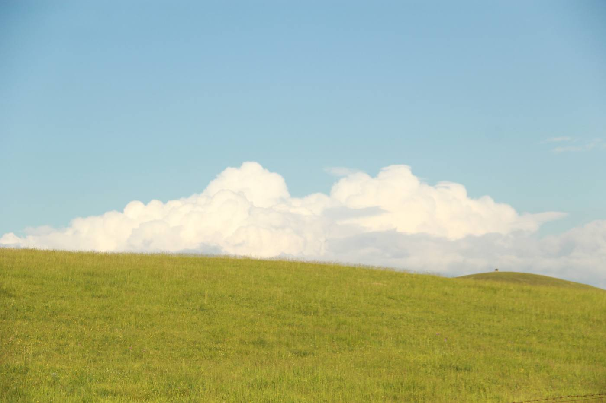

N1GHT CHXN9
Photographs, visual experiments, and the game worlds that keep following me home.
I collect the moments that refuse to fade.
“Some images document a place. The ones I keep document how it felt.”
I’m N1GHT CHXN9. I photograph quiet landscapes, changing skies, and small flashes of light—then edit them closer to memory than documentation.
Away from the camera, I wander through game worlds and digital culture. This site is where those threads meet: an evolving record of what I notice, make, and return to.
Light, held a little longer.
Landscapes, branches, flowers, and sky—edited toward the feeling I remember.
11 frames · 02 studies
Worlds I never really left.
Games are another way I collect atmosphere, places, and stories. These are the ones that stayed after the credits.
Send a signal.
For photography, visual collaborations, game conversations, or simply to say hello—my inbox is open.